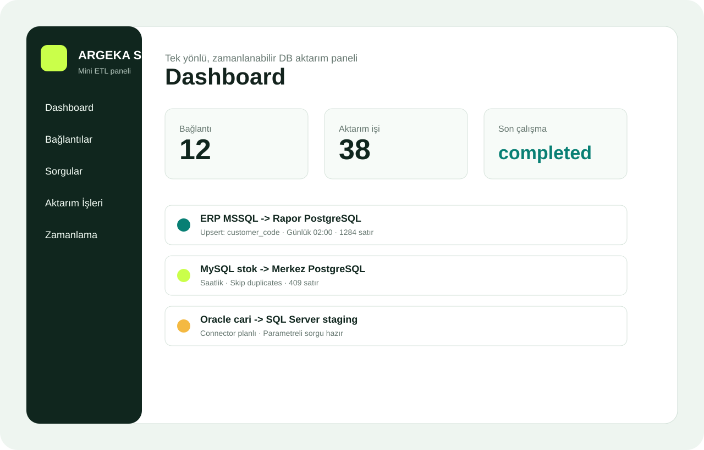

Problem
Running reports directly on an ERP database can slow down the operational system when sales, stock or finance tables are queried heavily.
Use cases
Small technical teams often need a reliable local transfer flow, not a large ETL platform. ARGEKA Sync focuses on that practical middle ground.

Scenario 1
Running reports directly on an ERP database can slow down the operational system when sales, stock or finance tables are queried heavily.
Selected fields are read from the source ERP database and transferred into reporting-friendly tables on a schedule.
Dashboards and analysis queries run without putting extra read pressure on the live system.
Scenario 2
When each location runs its own operational database, teams often need stock, sales or transaction summaries in one central place. ARGEKA Sync can run one-way scheduled transfers with SQL parameters for date range, company, warehouse or branch code.
This model is useful for sales monitoring, reconciliation, stock visibility and regional performance reporting. Each run can be reviewed by status, error behavior and transferred row count.
Scenario 3
Customer or vendor records can be transferred through explicit column mappings.
Product code, description, unit, group and active status can be moved selectively.
Reporting tables can use summaries instead of copying every document detail.
Transfer time, row count and error notes can be tracked separately.
If you need real-time two-way synchronization, streaming data pipelines, complex transformation languages or enterprise data governance, a larger ETL platform may be a better option. ARGEKA Sync is designed for local, repeatable and understandable transfer jobs.